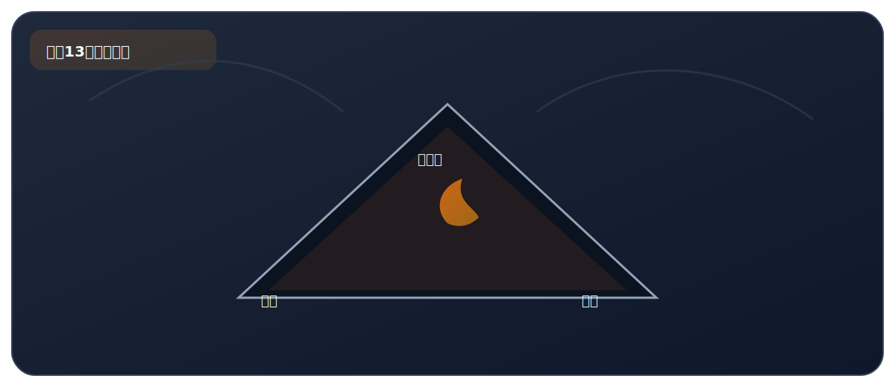

实验十三、探究燃烧的条件

来自 PDF《化学实验基础知识及课本实验总结》的整理。建议：先读"实验原理"，再背"操作顺序"，最后用"误差分析/注意事项"拿分。
实验目标
- 通过对比实验总结燃烧条件，并能迁移到灭火原理。
核心原理
- 燃烧三个条件（缺一不可）：①可燃物 ②与氧气（或空气）接触 ③温度达到可燃物的着火点。
关键步骤（怎么做）
- 实验I：铜片上分别放白磷和红磷，热水中放白磷——观察哪些能燃烧。
- 实验II：用导管向热水中的白磷通入氧气——观察白磷能否在水中燃烧。
现象（看到什么）
- 实验I：铜片上白磷燃烧（产生白烟），红磷不燃烧，水中白磷不燃烧。
- 实验II：通入氧气后，水中白磷燃烧。
高频考点（怎么拿分）
- 铜片上白磷燃烧、红磷不燃烧——说明燃烧需要温度达到着火点（白磷着火点约 40℃，红磷着火点约 240℃）。
- 铜片上白磷燃烧、水中白磷不燃烧——说明燃烧需要与氧气接触。
- 水中白磷通入 O2 后燃烧——说明只要同时满足三个条件就能燃烧（即使在水中）。
- 灭火原理（三选一即可）：①移走可燃物 ②隔绝氧气（或空气）③降温到着火点以下。注意：不能说“降低着火点”——着火点是物质固有属性，不能被降低。
- 着火点是物质的固有属性，不能改变——考试中说“降低着火点”是错误表述。
安全提醒
- 白磷有毒且着火点低（约 40℃），操作要小心；白磷着火用沙覆盖灭火。
- 酒精灯使用注意：禁止用嘴吹灭（用灯帽盖灭）；酒精灯着火用湿抹布盖灭。
PDF摘录（原文提取，供对照）
要点
- 可燃物；
- 燃烧的三要素 氧气（或空气）；
- 达到燃烧所需的最低温度（着火点）。
- 实验 I：铜片上的白磷燃烧，红磷不燃烧；水中的白磷不燃烧。
实验现象
- 实验 II：水中的白磷燃烧。
- 实验 I 中：
- 铜片上红磷不燃烧，说明燃烧要温度达到可燃物的着火 点；
原因分析
- 水中的白磷不燃烧，说明燃烧要可燃物与氧气接触。
- 实验 II 中：
- 水中的白磷燃烧的原因是：水中的白磷接触氧气且温度达 到可燃物的着火点。
- 说明 白磷着火点 40 ℃ 左右；红磷着火点 260 ℃ 左右。